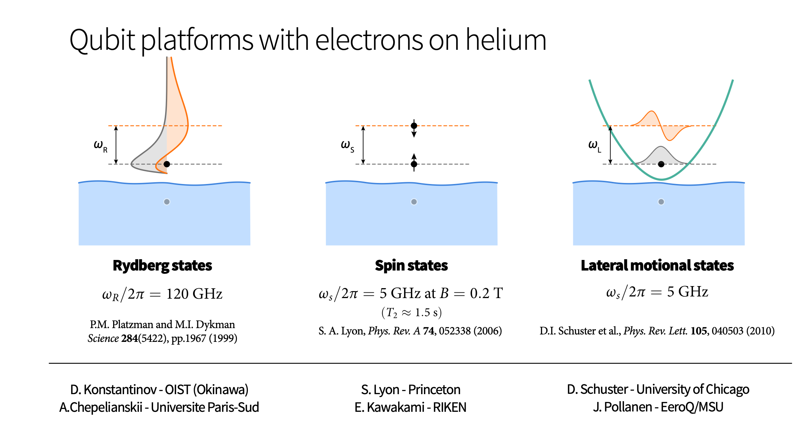
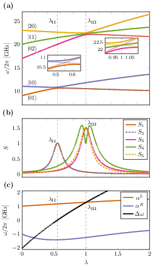
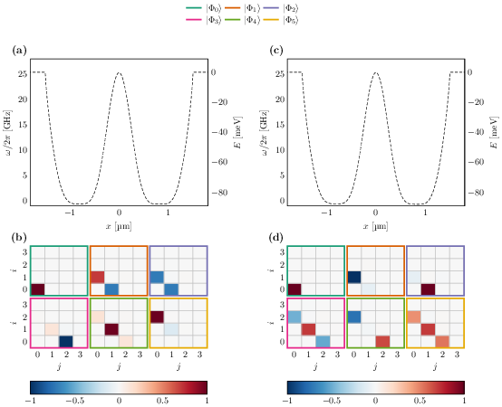

Niyaz Beysengulov and Johannes Pollanen (experiment, Physics); Zachary Stewart, Jared Weidman, and Angela Wilson (quantum chemistry)
Øyvind Sigmundson Schøyen, Stian Dysthe Bilek, and Håkon Emil Kristiansen (Physics and quantum chemistry). In addition collaboration on point defects with Marianne Bathen and Lasse Vines.
Here we describe a method for generating motional entanglement between two electrons trapped above the surface of superfluid helium. In this proposed scheme these electronic charge qubits are laterally confined via electrostatic gates to create an anharmonic trapping potential. When the system is cooled to sufficiently low temperature these in-plane charge qubit states are quantized and circuit quantum electrodynamic methods can be used to control and readout single qubit operations. Perspectives for quantum simulations with quantum dots systems will be discussed.



Electrons on superfluid helium represent, see https://www.youtube.com/watch?v=EuDuM-fe-lA&ab_channel=JoshuahHeath a promising platform for investigating strongly-coupled qubits.
A systematic investigation of the controlled generation of entanglement between two trapped electrons under the influence of coherent microwave driving pulses, taking into account the effects of the Coulomb interaction between electrons, may be of great interest for quantum information processing using trapped electrons.
Entanglement is the fundamental characteristic that distinguishes quantum systems composed of two or more coupled objects from their classical counterparts. The study of entanglement in precisely engineered quantum systems with countably many degrees of freedom is at the forefront of modern physics and is a key resource in quantum information science (QIS). This is particularly true in the development of two-qubit logic for quantum computation.
The generation of two-qubit entanglement has been demonstrated in a wide variety of physical systems used in present-day quantum computing, including superconducting circuits, trapped ions, semiconductor quantum dots, color-center defects in diamond, and neutral atoms in optical lattices, just to name a few.
Generating an entanglement between two quantum systems rely on exploiting interactions in a controllable way. The details in the interaction Hamiltonian between two systems defines the protocol schemes for two-qubit logic.
In superconducting circuits the interaction between qubits may arise from direct capacitive coupling between circuit elements or by indirect coupling of two qubits to a common resonator (virtually populating resonator mode) which results in a non-local Hamiltonian in the form of exchange interaction. This allow to implement various schemes for entanglement, such as controlled-phase gate, resonator-induced phase gate, cross-resonance gates etc.
Entanglement gates in trapped ions are produced by means of the Coulomb interaction, where shared motional modes of two or more ions, entangled to their internal states, used for transferring excitations between ion qubits. This has been experimentally demonstrated.
In photonic quantum computing schemes two-qubit entangling operations are realized by nonlinear interactions between two photons scattering from quantum dots, plasmonic nanowires, diamond vacancy centers and others embedded into waveguides. Two-qubit gates in semiconductor quantum dots are based on spin-spin exchange interactions or generated by coupling to a superconducting resonator via artificial spin-orbit interaction.
The avoided crossing plays a central role in quantum simulations. It results from the coherent transfer of the population between the state \( \vert 0\rangle \) and the state \( \vert 1\rangle \). When we say coherent we mean that the quantumness and entanglement are preserved and the system follows our equation of motion (the Schroedinger equation) as expected. In real experiment it is not that simple.
In quantum technology, different quantum systems are coupled to enable various quantum state transfers and manipulations. Experimentally, avoided crossing of the energy levels, is one of the first feature to look for since it manifests the signature of preservation of quantumness and clean coupling between states in the experimental setup.
This system can be thought of as composed of two subsystems \( A \) and \( B \). Each subsystem has computational basis states
$$ \vert 0\rangle_{\mathrm{A,B}}=\begin{bmatrix} 1 & 0\end{bmatrix}^T \hspace{1cm} \vert 1\rangle_{\mathrm{A,B}}=\begin{bmatrix} 0 & 1\end{bmatrix}^T. $$The subsystems could represent single particles or composite many-particle systems of a given symmetry. This leads to the many-body computational basis states
$$ \vert 00\rangle = \vert 0\rangle_{\mathrm{A}}\otimes \vert 0\rangle_{\mathrm{B}}=\begin{bmatrix} 1 & 0 & 0 &0\end{bmatrix}^T, $$and
$$ \vert 01\rangle = \vert 0\rangle_{\mathrm{A}}\otimes \vert 1\rangle_{\mathrm{B}}=\begin{bmatrix} 0 & 1 & 0 &0\end{bmatrix}^T, $$and
$$ \vert 10\rangle = \vert 1\rangle_{\mathrm{A}}\otimes \vert 0\rangle_{\mathrm{B}}=\begin{bmatrix} 0 & 0 & 1 &0\end{bmatrix}^T, $$and finally
$$ \vert 11\rangle = \vert 1\rangle_{\mathrm{A}}\otimes \vert 1\rangle_{\mathrm{B}}=\begin{bmatrix} 0 & 0 & 0 &1\end{bmatrix}^T. $$These computational basis states define also the eigenstates of the non-interacting Hamiltonian
$$ H_0\vert 00 \rangle = \epsilon_{00}\vert 00 \rangle, $$ $$ H_0\vert 10 \rangle = \epsilon_{10}\vert 10 \rangle, $$ $$ H_0\vert 01 \rangle = \epsilon_{01}\vert 01 \rangle, $$and
$$ H_0\vert 11 \rangle = \epsilon_{11}\vert 11 \rangle. $$The interacting part of the Hamiltonian \( H_{\mathrm{I}} \) is given by the tensor product of two \( \sigma_x \) and \( \sigma_z \) matrices, respectively, that is
$$ H_{\mathrm{I}}=H_x\sigma_x\otimes\sigma_x+H_z\sigma_z\otimes\sigma_z, $$where \( H_x \) and \( H_z \) are interaction strength parameters. Our final Hamiltonian matrix is given by
$$ \boldsymbol{H}=\begin{bmatrix} \epsilon_{00}+H_z & 0 & 0 & H_x \\ 0 & \epsilon_{10}-H_z & H_x & 0 \\ 0 & H_x & \epsilon_{01}-H_z & 0 \\ H_x & 0 & 0 & \epsilon_{11} +H_z \end{bmatrix}. $$The four eigenstates of the above Hamiltonian matrix can in turn be used to define density matrices. As an example, the density matrix of the first eigenstate (lowest energy \( E_0 \)) \( \Psi_0 \) is
$$ \rho_0=\left(\alpha_{00}\vert 00 \rangle\langle 00\vert+\alpha_{10}\vert 10 \rangle\langle 10\vert+\alpha_{01}\vert 01 \rangle\langle 01\vert+\alpha_{11}\vert 11 \rangle\langle 11\vert\right), $$where the coefficients \( \alpha_{ij} \) are the eigenvector coefficients resulting from the solution of the above eigenvalue problem.
We can then in turn define the density matrix for the subsets \( A \) or \( B \) as
$$ \rho_A=\mathrm{Tr}_B(\rho_{0})=\langle 0 \vert \rho_{0} \vert 0\rangle_{B}+\langle 1 \vert \rho_{0} \vert 1\rangle_{B}, $$or
$$ \rho_B=\mathrm{Tr}_A(\rho_0)=\langle 0 \vert \rho_{0} \vert 0\rangle_{A}+\langle 1 \vert \rho_{0} \vert 1\rangle_{A}. $$The density matrices for these subsets can be used to compute the so-called von Neumann entropy, which is one of the possible measures of entanglement.
We define a set of random variables \( X=\{x_0,x_1,\dots,x_{n-1}\} \) with probability for an outcome \( x\in X \) given by \( p_X(x) \), the information entropy is defined as
$$ S=-\sum_{x\in X}p_X(x)\log_2{p_X(x)}. $$This is the standard entropy definition, normally called the Shannon entropy
The quantum mechanical variant is the Von Neumann entropy
$$ S=-\mathrm{Tr}[\rho\log_2{\rho}]. $$A pure state has entropy equal zero while an entangled state has entropy larger than zero. The von-Neumann entropy is defined as
$$ S(A,B)=-\mathrm{Tr}\left(\rho_{A,B}\log_2 (\rho_{A,B})\right). $$%matplotlib inline
from matplotlib import pyplot as plt
import numpy as np
from scipy.linalg import logm, expm
def log2M(a): # base 2 matrix logarithm
return logm(a)/np.log(2.0)
dim = 4
Hamiltonian = np.zeros((dim,dim))
#number of lambda values
n = 40
lmbd = np.linspace(0.0,1.0,n)
Hx = 2.0
Hz = 3.0
# Non-diagonal part as sigma_x tensor product with sigma_x
sx = np.matrix([[0,1],[1,0]])
sx2 = Hx*np.kron(sx, sx)
# Diagonal part as sigma_z tensor product with sigma_z
sz = np.matrix([[1,0],[0,-1]])
sz2 = Hz*np.kron(sz, sz)
noninteracting = [0.0, 2.5, 6.5, 7.0]
D = np.diag(noninteracting)
Eigenvalue = np.zeros((dim,n))
Entropy = np.zeros(n)
for i in range(n):
Hamiltonian = lmbd[i]*(sx2+sz2)+D
# diagonalize and obtain eigenvalues, not necessarily sorted
EigValues, EigVectors = np.linalg.eig(Hamiltonian)
# sort eigenvectors and eigenvalues
permute = EigValues.argsort()
EigValues = EigValues[permute]
EigVectors = EigVectors[:,permute]
# Compute density matrix for selected system state, here ground state
DensityMatrix = np.zeros((dim,dim))
DensityMatrix = np.outer(EigVectors[:,0],EigVectors[:,0])
# Project down on substates and find density matrix for subsystem
d = np.matrix([[1,0],[0,1]])
v1 = [1.0,0.0]
proj1 = np.kron(v1,d)
x1 = proj1 @ DensityMatrix @ proj1.T
v2 = [0.0,1.0]
proj2 = np.kron(v2,d)
x2 = proj2 @ DensityMatrix @ proj2.T
# Total density matrix for subsystem
total = x1+x2
# von Neumann Entropy for subsystem
Entropy[i] = -np.matrix.trace(total @ log2M(total))
# Plotting eigenvalues and entropy as functions of interaction strengths
Eigenvalue[0,i] = EigValues[0]
Eigenvalue[1,i] = EigValues[1]
Eigenvalue[2,i] = EigValues[2]
Eigenvalue[3,i] = EigValues[3]
plt.plot(lmbd, Eigenvalue[0,:] ,'b-',lmbd, Eigenvalue[1,:],'g-',)
plt.plot(lmbd, Eigenvalue[2,:] ,'r-',lmbd, Eigenvalue[3,:],'y-',)
plt.xlabel('$\lambda$')
plt.ylabel('Eigenvalues')
plt.show()
plt.plot(lmbd, Entropy)
plt.xlabel('$\lambda$')
plt.ylabel('Entropy')
plt.show
The example here shows the above von Neumann entropy based on the density matrix for the lowest many-body state. We see clearly a jump in the entropy around the point where we have a level crossing. At interaction strenght \( \lambda=0 \) we have many-body states purely defined by their computational basis states. As we switch on the interaction strength, we obtain an increased degree of mixing and the entropy increases till we reach the level crossing point where we see an additional and sudden increase in entropy. Similar behaviors are observed for the other states. The most important result from this example is that entanglement is driven by the Hamiltonian itself and the strength of the interaction matrix elements.
Coulomb interaction governed entanglement can be realized in the system of electrons on the surface of superfluid helium, where qubit states are formed by in-plane lateral motional or out-of plane Rydberg states. Trapped near the surface of liquid helium these states have different spatial charge configurations and the wavefunctions of different electrons do not overlap.
This results in a strong exchange free Coulomb interaction which depends on the states of the electrons. The lack of disorder in the systems also leads to slow electron decoherence, which has attracted interest to the system as a candidate for quantum information processing.
The static Coulomb interaction arises from a virtual photon exchange process between two charge particles according to quantum electrodynamics. This results in a correlated motion of two charges generating quantum entanglement.
Surface state electrons (SSE) 'floating' above liquid helium originates from quantization of electron's perpendicular to the surface motion in a trapping potential formed by attractive force from image charge and a large \( \sim \) 1 eV barrier at the liquid-vacuum interface. At low temperatures the SSE are trapped in the lowest Rydberg state for vertical motion some 11 nm above the helium surface, which is perfectly clean and has a permittivity close to that of vacuum.
The weak interaction with rthe enviroment, which is mainly governed by interaction with quantized surface capillary waves (ripplons) and bulk phonons, ensures long coherence times - a vital ingredient for any qubit platform.
To investigate our model, which consists of two electrons confined to a one-dimensional external potential, we utilized the method of exact diagonalization to solve the two-body Schrödinger equation. We build a two-particle wave function from a set of single-particle functions. The representation of the one-body Hamiltonian's eigenstates on a discrete grid offers us the flexibility to select the external potential of our choice, and it also fits the interpolated potential very effectively.
As we are only studying a model comprised of two electrons restricted to move in a one-dimensional external potential we have employed full configuration interaction (shell-model in NP) theory to compute the steady-state properties of the system. We have used a static, one-dimensional, grid-based basis set for the single-particle functions. This allows for flexibility in the choice of the external potential, and fits the interpolated potential particularly well.
The Hamiltonian of \( N \) interacting electrons confined by some potential \( v(r) \) can be written on general form
$$ \begin{equation} \hat{H} = \sum_{i=1}^N \left(-\frac{1}{2}\nabla_i^2 + v(r_i) \right) + \sum_{i < j} \hat{u}(r_i, r_j), \label{_auto1} \end{equation} $$where \( \hat{u}(i,j) \) is the electron-electron (Coulomb) interaction.
We consider a one-dimensional model where the confining potential is parametrized/obtained from finite element calculations. The bare Coulomb interaction is divergent in 1D (REF) and it is customary to use a smoothed Coulomb interaction given by
$$ \begin{align} u(x_1, x_2) = \frac{\alpha}{\sqrt{(x_1 - x_2)^2 + a^2}}, \label{_auto2} \end{align} $$where \( \alpha \) adjusts the strength of the interaction and \( a \) removes the singularity at \( x_1 = x_2 \).
The single-particle functions are chosen as the eigenfunctions of the single-particle Hamiltonian
$$ \begin{equation} \left( -\frac{d^2}{dx^2}+v(x) \right) \psi_p(x) = \epsilon_p \psi_p(x). \label{_auto3} \end{equation} $$By entirely factoring out the spin component of the problem (as the singlet and triplet states will be degenerate), we can treat the two electrons as distinguishable particles, with one electron located in the left well and the other electron situated in the right well.
We solve the full two-body problem using exact diagonalization. The wave function ansatz is then given by a product of Hartree single-particle states
$$ \begin{align} \vert\Phi_I\rangle &= \sum_{k = 0}^{N^L} \sum_{l = 0}^{N^R} C_{kl, I} \vert \phi^{L}_k \phi^{R}_l\rangle, \label{_auto4} \end{align} $$where no symmetry is assumed for the wavefunction as the particles are distinguishable, and the index \( I = (i, j) = iN^R + j \) is a compound index denoting the excited two-body state we are looking at.
In the Hartree-method for two distinguishable particles we approximate the ground state \( \vert\Phi_0\rangle \) of the full Hamiltonian \( \hat{H} \) as the product state
$$ \vert\Phi_0\rangle \approx \vert\Psi\rangle= \vert\phi^L_0 \phi^R_0\rangle, $$under the constraint that the Hartree orbitals are orthonormal.
Given that we are dealing with a bipartite quantum system, a natural measure for characterizing entanglement is the von Neumann entropy discussed above. We defined it as
$$ S= -\mathrm{tr}(\hat{\rho}\log_2(\hat{\rho})), $$where \( \hat{\rho} \) is the density operator/matrix.

